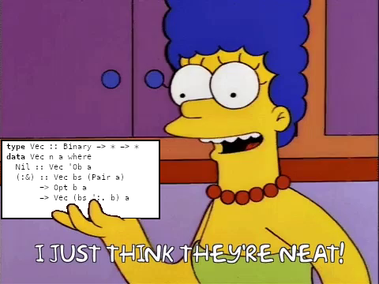

I want to talk about my current favorite data structure.
First, some background.
Binary trees are fairly easy to implement in Haskell:
data Tree a = Leaf a | Branch (Tree a) (Tree a)
What’s slightly trickier is defining a type for balanced binary trees.
I’ve been fascinated by Edward Z. Yang’s solution to this problem using polymorphic recursion, ever since I read it on his blog:
data Tree a = Leaf a | Branch (Tree (a, a))
The similarity to the unbalanced tree type is striking, especially if you replace (,) with a type for uniform pairs:
data Two a = a :* a
infixr 8 :*
-- unbalanced
data Tree a = Leaf a | Branch (Two (Tree a))
-- balanced
data Tree a = Leaf a | Branch (Tree (Two a))With the balanced variant, Tree a values look like:
Leaf a₀
Branch (Leaf (a₀ :* a₁))
Branch (Branch (Leaf ((a₀ :* a₁) :* (a₂ :* a₃))))
Branch (Branch (Branch (Leaf (((a₀ :* a₁) :* (a₂ :* a₃)) :* ((a₄ :* a₅) :* (a₆ :* a₇))))))We can further restrict the Tree type to only balanced trees of 2ᵗ elements by introducing a type-level index:
data Nat = Z | S Nat
data Tree (t :: Nat) (a :: *) where
Leaf :: a -> Tree 'Z a
Branch :: Tree n (Two a a) -> Tree ('S n) aSo now the shape of an element of Tree t a is uniquely defined by t:
Leaf a₀ :: Tree 'Z a
Branch (Leaf (a₀ :* a₁)) :: Tree ('S 'Z) a
Branch (Branch (Leaf ((a₀ :* a₁) :* (a₂ :* a₃)))) :: Tree ('S ('S 'Z)) a
Branch (Branch (Branch (Leaf (((a₀ :* a₁) :* (a₂ :* a₃)) :* ((a₄ :* a₅) :* (a₆ :* a₇)))))) :: Tree ('S ('S ('S 'Z))) aOn its own, this level of constraint seems of limited use, but it comes into its own as a building block.
Just as we can use t bits to represent any natural number less than 2ᵗ:
∀ n ∈ [0, 2ᵗ) ∃ { bᵢ ∈ {0,1} | i ∈ [0, t) } s.t. n = Σ bᵢ 2ⁱ
1 = 0b1 = 1 × 2⁰
13 = 0b1101 = (1 × 2³) + (1 × 2²) + (0 × 2¹) + (1 × 2⁰)
210 = 0b11010010 = (1 × 2⁷) + (1 × 2⁶) + (0 × 2⁵) + (1 × 2⁴) + (0 × 2³) + (0 × 2²) + (1 × 2¹) + (0 × 2⁰) We can use up to t balanced binary trees to represent collections of less than 2ᵗ elements.
data Vec (t :: Nat) (a :: *) where
Nil :: Vec 'Z a
(:&) :: Vec t (Two a a) -> Maybe a -> Vec ('S t) a
infixl 4 :&
If we replace Maybe by an indexed variant:
data Bit = O | I
data Opt (b :: Bit) a where
None :: Opt 'O a
Some :: a -> Opt 'I aThen we can represent collections of exactly n elements by replacing the unary representation of t with a binary representation of the t bits of n:
data Binary = Ob | Binary :. Bit
infixl 4 :.
data Vec (n :: Binary) (a :: *) where
Nil :: Vec 'Ob a
(:&) :: Vec bs (Two a a) -> Opt b a -> Vec (bs ':. b) aAnd now we’ve arrived!

Countable collection types are nothing new in Haskell; commonly showing up using a linked list representation:
data ListVec (n :: Nat) (a :: *) where
End :: ListVec 'Z a
Cons :: a -> ListVec n a -> ListVec ('S n) aThough GHC now has its own built-in type-level naturals, a unary representation has the advantage of pattern matching, which can simplify the process of proving properties, e.g.
append :: ListVec m a -> ListVec n a -> ListVec (Sum m n) a
append End v = v
append (Cons a u) v = Cons a (append u v)
type Sum :: Nat -> Nat -> Nat
type family Sum m n where
Sum 'Z n = n
Sum ('S m) n = 'S (Sum m n)Using a binary encoding for naturals preserves that pattern-matching property, with the expense of more complicated cases:
combine :: Vec m a -> Vec n a -> Vec (m + n) a
combine = loop None where
loop :: Opt b a -> Vec m a -> Vec n a -> Vec (AddCarry b m n) a
loop opt Nil v = check opt v
loop opt u Nil = check opt u
loop copt (u :& uopt) (v :& vopt) = loop (carry copt uopt vopt) u v :& least copt uopt vopt
check :: Opt b a -> Vec n a -> Vec (CheckCarry b n) a
check None v = v
check (Some a) v = push a v
push :: a -> Vec n a -> Vec (Succ n) a
push a Nil = Nil :& Some a
push a (v :& None) = v :& Some a
push a (v :& Some a') = push (a' :* a) v :& None
carry :: Opt x a -> Opt y a -> Opt z a -> Opt (Carry x y z) (Two a)
carry _ None None = None
carry x None (Some a) = fmap (a :*) x
carry x (Some a) None = fmap (a :*) x
carry _ (Some y) (Some z) = Some (y :* z)
least :: Opt x a -> Opt y a -> Opt z a -> Opt (Xor x y z) a
least x None None = x
least x None (Some a) = flop x a
least x (Some a) None = flop x a
least x (Some _) (Some _) = x
flop :: Opt x b -> a -> Opt (Not x) a
flop None = Some
flop (Some _) = const None
type (+) :: Binary -> Binary -> Binary
type (+) = AddCarry 'O
type AddCarry :: Bit -> Binary -> Binary -> Binary
type family AddCarry b m n where
AddCarry b 'Ob n = CheckCarry b n
AddCarry b m 'Ob = CheckCarry b m
AddCarry cb (m ':. mb) (n ':. nb) = AddCarry (Carry cb mb nb) m n ':. Xor cb mb nb
type CheckCarry :: Bit -> Binary -> Binary
type family CheckCarry b n where
CheckCarry 'O n = n
CheckCarry 'I n = Succ n
type Succ :: Binary -> Binary
type family Succ n where
Succ 'Ob = 'Ob ':. 'I
Succ (bs ':. 'O) = bs ':. 'I
Succ (bs ':. 'I) = Succ bs ':. 'O
type Carry :: Bit -> Bit -> Bit -> Bit
type family Carry x y z where
Carry b 'O 'O = 'O
Carry b 'O 'I = b
Carry b 'I 'O = b
Carry b 'I 'I = 'I
type Xor :: Bit -> Bit -> Bit -> Bit
type family Xor x y z where
Xor b 'O 'O = b
Xor b 'O 'I = Not b
Xor b 'I 'O = Not b
Xor b 'I 'I = b
type Not :: Bit -> Bit
type family Not b where
Not 'O = 'I
Not 'I = 'OThough this is considerably more code, the algorithmic complexity of +/combine is asymptotically less than that of Sum/append. It takes O(m) steps to compute Sum m n, but only O(log(max(m,n))) to compute m + n.
This algorithmic complexity advantage carries over to other operations too, like indexing:
data FBinary (n :: Binary) where
(:!) :: FBinary bs -> Bit -> FBinary (bs ':. b)
Top :: FBinary (bs ':. 'I)
(!) :: Vec n a -> FBinary n -> a
(!) = loop id where
loop :: (x -> a) -> Vec n x -> FBinary n -> a
loop f (as :& _) (i :! b) = loop (f . get b) as i
loop f (_ :& Some x) Top = f x
get :: Bit -> Two a -> a
get O (a :* _) = a
get I (_ :* a) = a(!) is O(log n) for Vec n a, whereas indexing a ListVec n a is O(n).
In the hope that others might enjoy these data structures and algorithms using type-level binary numbers, I’ve wrapped them up in a new package, base₂.